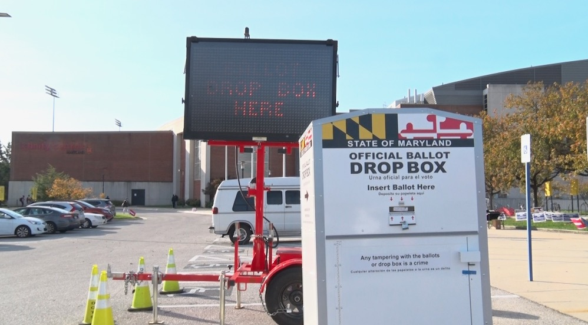
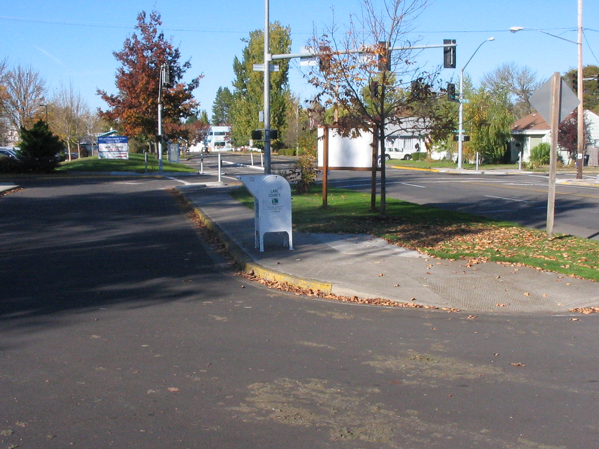

By Rachel Clair, Kaanita Iyer and Jacob Rousseau
With confusion looming over voting amid the coronavirus pandemic, several states have announced their plans to make it easier to vote in the upcoming general and local elections on Nov. 3.
The revamped voting process includes ballots sent via mail and accessible drop box locations for those who wish to avoid in-person voting, as well as early voting centers to ease expected delays.
Capital News Service has assembled the following guide on voter registration, voting by mail, and early and Election Day voting in Maryland, the District of Columbia and Virginia.
There are lots of ways to vote in Maryland. Let’s break down the steps for each.
First, you must be registered to vote. Contact your local or state Board of Elections to confirm your address. You may register online or by mail. The deadline is Oct. 13. For more information: Online Voter Registration Instructions
If you do not want to go to a polling place in person on or before Election Day, the first step is to request a ballot.
The Board of Elections is urging Marylanders to vote through mail-in ballots — formerly known as absentee ballots — due to the coronavirus pandemic. Maryland’s mail-in process is two steps: A ballot request form; and then the ballot.
Maryland voters should have received, by mid-September, mail-in voting applications in the mail sent to their home addresses. Return this application to the Board of Elections to have a ballot sent to you. Here is a video explaining the process: Mail-in Voting Application Process
Voters who did not receive a mail-in voting application in the mail can request one on the Maryland Board of Elections website: Requesting a Mail-in Ballot
Mail-in voting applications, whether sent online or through the mail, must be returned by Oct. 20.
Once your application for a mail-in ballot has been processed, you may pick up a ballot at some local boards of elections; you may print your ballot from an email link sent to you; or it can be mailed or faxed to you.
Ballots can be sent via the U.S. Postal Service, hand delivered to a local board of elections or polling place, or put in official drop boxes. Ballots may be marked online, but may not be emailed, faxed or cast online.
Voters who choose to mail-in their votes through the Postal Service must have them postmarked by Nov. 3 and received by 10 a.m. Nov. 13, in order to be counted. Ballots must be filled out in black ink and the envelope (but not the ballot) should be signed.
The Board of Elections is installing around 280 boxes in public places around the state. Here is a list of locations: Drop-Off Boxes in Maryland
The deadline to drop ballots in one of these boxes is 8 p.m. on Nov. 3.
Maryland residents may vote in person at early voting locations or, on Election Day, at polling places.
Early voting will run from Monday, Oct. 26, to Monday, Nov. 2. Voters must vote in their home county. There are at least 89 early-voting centers across the state: Early-Voting Centers in Maryland
On Election Day, there will be more than 300 voting centers statewide, and these can be found here: Election Day Voting Centers in Maryland
Centers will be open from 7 a.m. to 8 p.m. on Nov. 3. COVID-19 precautions and signs will be implemented at these centers to ensure the safety of voters.
The District will send ballots to every registered voter via mail for the Nov. 3 general election. Residents may drop off the ballots at any of the 55 drop box locations at any time before 8 p.m. on Election Day.
In-person voting is also available in the District starting Oct. 27 at 8:30 a.m. The Board of Elections has set up 32 early vote centers, along with nearly 100 day-of vote centers that will open at 7 a.m.
The complete list of drop box locations, early vote centers and Election Day vote centers can be found here.
Residents may register to vote via email or mail by filling out this voter registration application. All applications must be emailed by or, if by mail, received by the Board of Elections no later than Oct. 13. Same-day registration is available as well during early voting and on Election Day with acceptable forms of proof of residence. You can also check your registration status here.
For more information, see the Board’s voter registration guide.
To help lessen the burden on voters during the pandemic, early access voting began Sept. 18 and ends on Oct. 31 at local elections offices. Voters must have an acceptable form of identification, which includes a drivers license or passport.
Virginia citizens may also vote via mail-in or absentee ballots by filling out this voter registration application. Local registrars made these ballots available to the public starting Sept. 18 and the deadline to request a ballot is 5 p.m. on Oct. 23. You may also fill out your mail-in ballot at home and return it in-person.
If you are unable to make certain voting deadlines, emergency absentee ballots can be requested from your local elections office until 2 p.m. on Nov. 2.
Virginia Gov. Ralph Northam signed legislation on Sept. 4 to allow cities and counties to deploy ballot drop boxes. Virginia residents should consult their city or county elections offices for locations.
For more voting information, see Virginia’s Department of Elections, frequently asked questions page.
As the election has come to a close, the DMV is overall thrilled with the result. Joe Biden won all three states, as well as the election as a whole. The District of Columbia demonstrated its love for Biden the most during the election, as according to the Associated Press, he won 93% of the states votes. Biden won over the state of Maryland too, beating Donald Trump by 33.4%. In Virginia, Biden received 54.4% of votes.
Out of all the voting opportunities previously discussed, did the DMV take advantage of them? It looks like yes, especially early voting which came in record breaking numbers. According to NBC Washington, 5.4 million people in the DMV had already voted by Election Day. In the United States as a whole, 100 milliion Americans voted by Election Day, which is about two-thirds of all votes cast in 2016. Super vote centers, such as Capital One Arena in D.C. and FedExField in Maryland, reported short waits on Election Day.